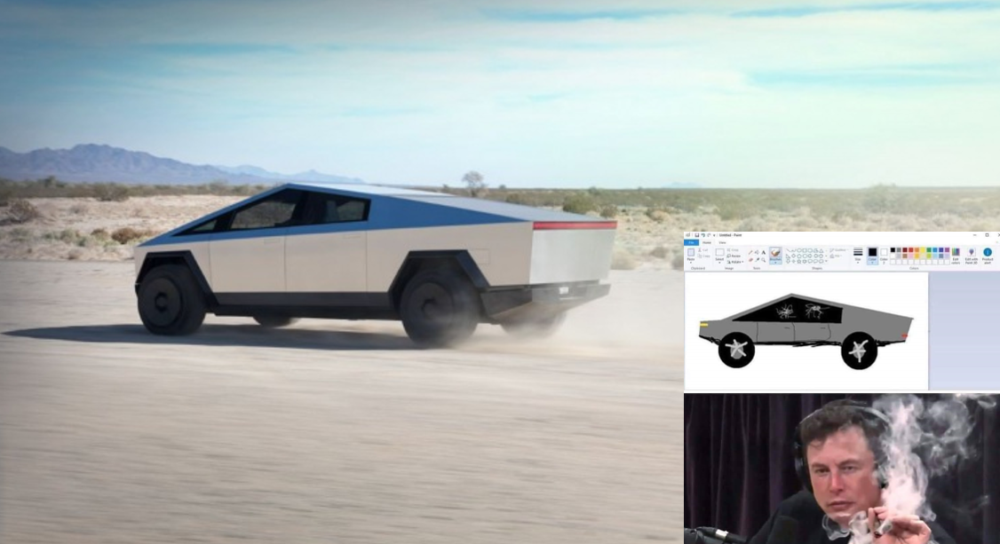
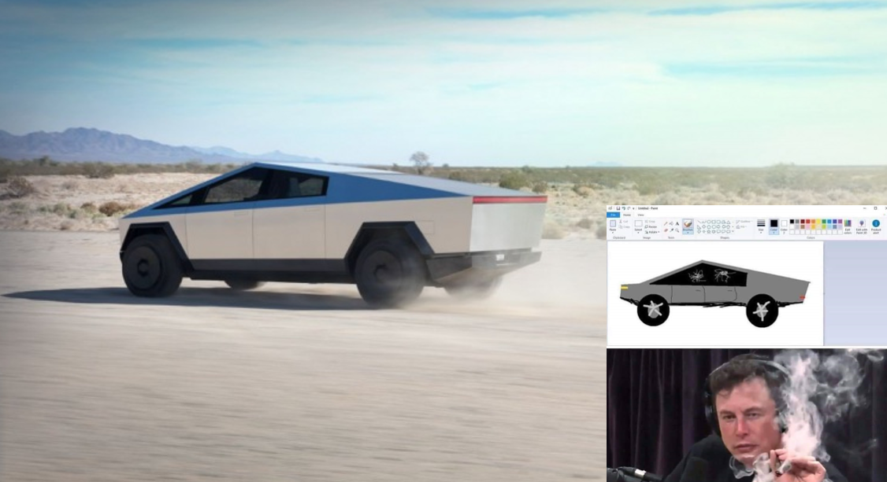

Nissan Cube 15 000 euros Vous en avez marre des voitures qui se ressemblent toutes, la Nissan Cube est faite pour vous ! Avec son profil aérodynamique, son moteur v2 à 4 rapports et ses 80 chevaux, elle est capable de fendre l’air à une vitesse maximale de 150 km/h et un 0 à 100 en 1 minute. C’est une voiture familiale avec laquelle vous pourrez promener 5 personnes.
Citroën Picasso 180 000 euros Ce Citroën Picasso a été spécialement préparé par notre préparateur Jacky. Avec son moteur v12 de 280 chevaux et une boîte de vitesse de 5 rapports, elle atteint le 0 à 100 km/h en 4,2 secondes, merci Jacky. Pour alimenter son moteur surpuissant, il lui faut 10,4 L au 100. Le gros avantage de ce Picasso est son format familial, avec ses 5 places vous pourrez faire crisser les pneus sur le circuit en famille.
Ferrari Testarossa 160 000 euros Cette magnifique voiture vous propose une puissance de 380 chevaux dans un v12 à 5 rapports, ce qui vous permettra d’atteindre une vitesse maximale de 292 km/h avec un 0 à 100 en 5,6 secondes. Malgré une consommation de 18L au 100 km, la Testarossa ne vous coûtera pas autant que vous le pensez. Même si cette voiture ne vous propose que 2 places, vous pourrez amener votre fille à l’école.
Fiat Multiplat 200 000 euros Vous pourriez penser que cette voiture est chère, mais elle vaut sont prix. Avec une puissance de 801 chevaux, une boîte de vitesse à 7 rapports qui vous permet d’atteindre la vitesse de 450 km/h avec un 0 à 100 en 3,4 secondes. Cette voiture est faite pour vous si vous voulez rivaliser avec les plus grands super cars italiens. De plus avec une consommation de 4L au 100, elle se place parmi les voitures économique et bonnes pour l’environnement. En plus de ses performances sportives, elle permet aussi d’accueillir la famille et les amis avec un total de 6 places.
Tesla Cybertruck 40 000 euros Une voiture avec un barbecue et un emplacement pour mettre votre quad, ça vous dit ? Ce pick-up est fait pour vous. Vous avez peur qu’avec ses 3 moteurs électriques elle ne rivalise pas avec les thermiques ? Demandez à la Ford F-Series ce qu’elle en pense. En plus d’être écologique, elle possède des capacités dignes des voitures de sport avec une vitesse maximale de 300 km/h et un 0 à 100 en 3,9 secondes. Difficile à croire, mais son profil aérodynamique lui permet de rouler sur une plus grande distance.